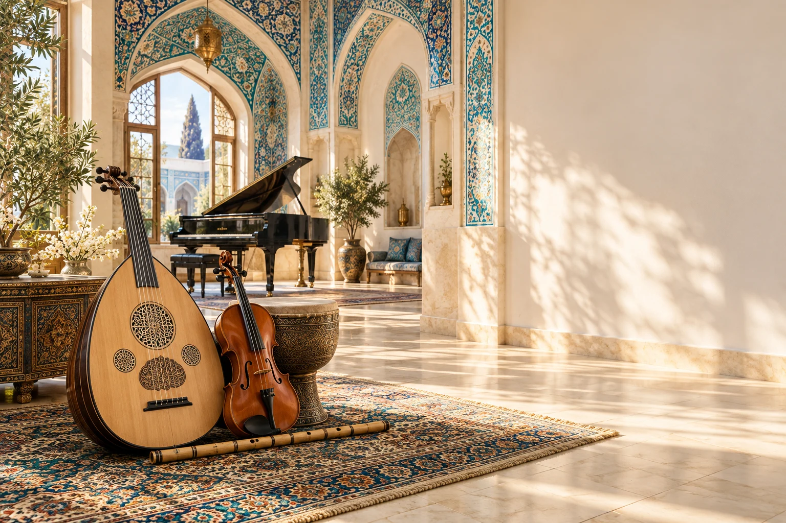
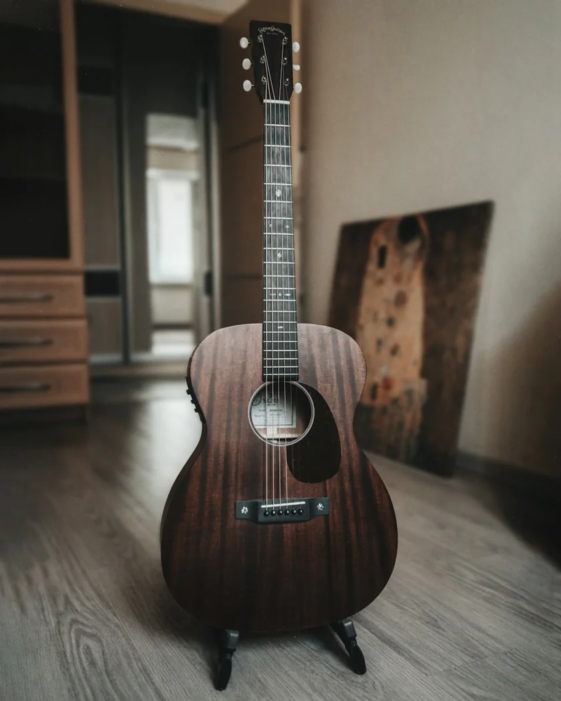
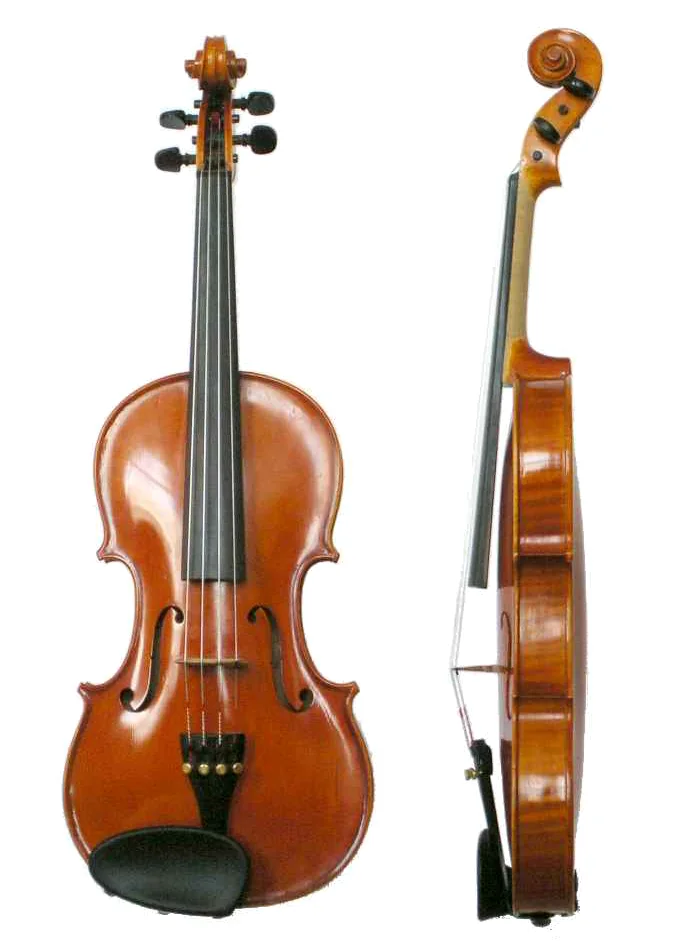
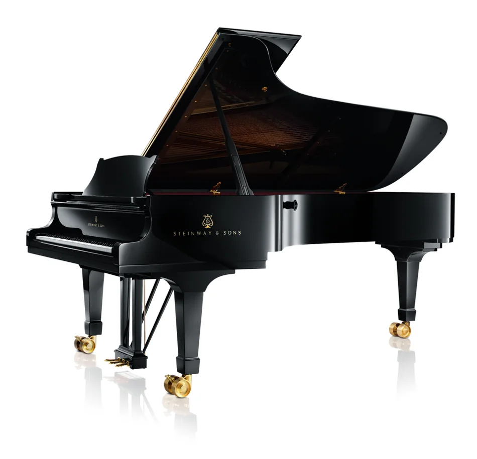
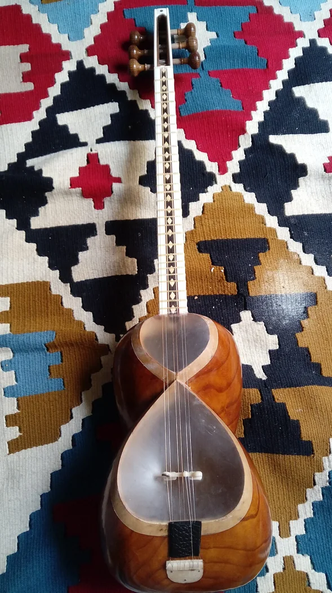
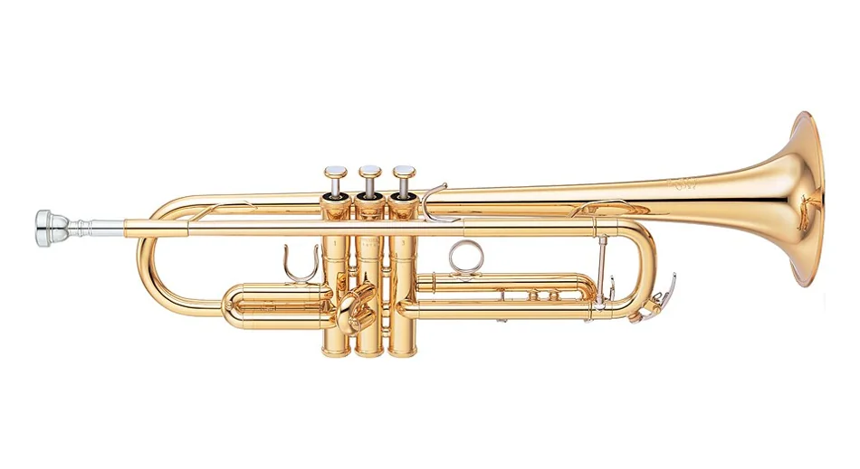

ریشه در اصالت
تار، سهتار، عود، سنتور، نی، تنبک و دف
آشنایی با اساتید ←
از ریشههای ایرانی،
تا دنیای بیمرز هنر.
موسیقی ایرانی و جهانی، آواز و هنرهای تجسمی؛
مسیر یادگیریات را با یک انتخاب آگاهانه آغاز کن.
علاقههایت را مرور کن، ریتم و شنوایی را تجربه کن و با دلیل، ساز و استاد مناسب برای شروع را بشناس.
راهنمای تعاملی · بدون ثبتنامرشتههای آموزشگاه را بشناسید؛
انتخاب مسیر را با راهنمایی دفتر انجام دهید.
تار، سهتار، عود، سنتور، نی، تنبک و دف
آشنایی با اساتید ←پیانو، ویولن، گیتار، درام، کیبورد، کلارینت و ترومپت
آشنایی با اساتید ←آواز، صداسازی، سلفژ، آهنگسازی، تنظیم، دیجی و سازهای کوبهای
آشنایی با اساتید ←عکاسی و فیلمبرداری، فوتوشاپ، آبرنگ، سیاهقلم، نقاشی کودک و موسیقی کودک
آشنایی با اساتید ←پنج ساز، پنج جنس صدا؛ درباره مسیر یادگیری و استاد هرکدام بخوان.

ترانهات را همراهی کن

ملودی را پیوسته بنواز

یک دنیا ملودی و هارمونی

به صدای ریشهها نزدیک شو

صدایی روشن و پرقدرت
ویولن، ترومپت، آهنگسازی و تنظیم
دف، کاخن، موسیقی کودک
دف، کاخن، جیمبی، هنگ درام
گیتار، سلفژ، صداسازی، تئوری موسیقی
تنبک
پیانو، درام، کیبورد
سنتور
تار، سه تار، عود
نی، آواز، کلارینت، ترومپت
گیتار فلامنکو
فیلم برداری و عکاسی، فوتوشاپ، آب رنگ
سیاه قلم، نقاشی کودک
دی جی
روز موردنظرت را انتخاب کن؛
رشتههای همان روز را ببین.
ساعت دقیق و ظرفیت هر کلاس را از دفتر بپرسید.
زمان هنرجویان ثبتنامشده در پرتال شخصی مشخص است.
هنرجویان، اساتید و کارکنان با حساب اختصاصی وارد میشوند و اطلاعات مربوط به خود را میبینند.
برای انتخاب رشته، اطلاع از ظرفیت و ثبتنام با دفتر آموزشگاه هماهنگ کنید.